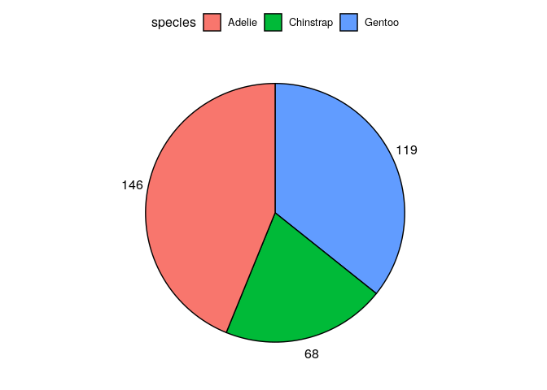
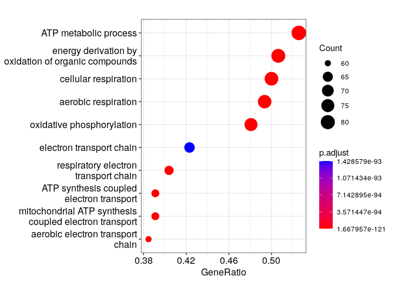
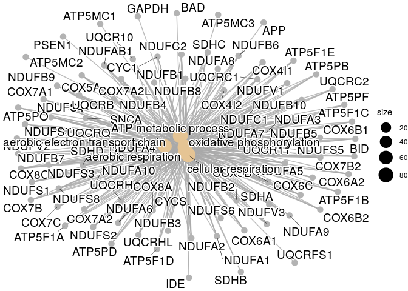
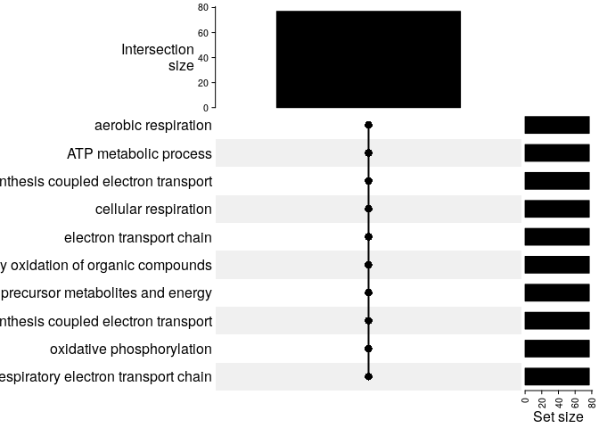
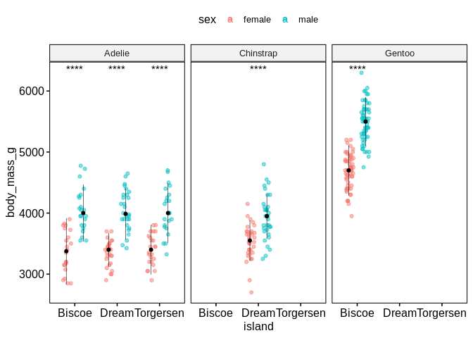
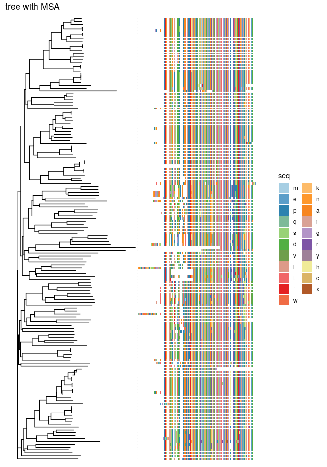
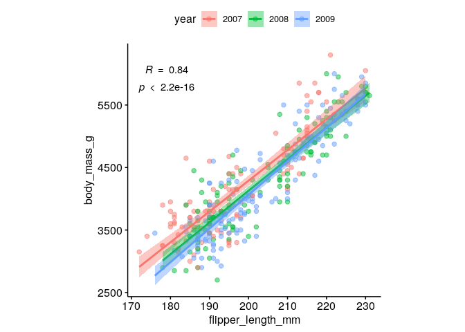
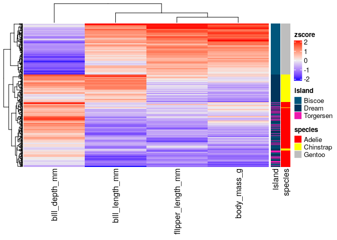

Get started#
Load data#

To start playing around with the functions from these packages we will
use the
palmerpenguins
data set. This simple data set has both continuous and categorical
variables that make it perfect for showcasing how different functions
work.
require(tidyverse)
penguins_url = "https://raw.githubusercontent.com/allisonhorst/palmerpenguins/master/inst/extdata/penguins.csv"
dat = read_csv(url(penguins_url))
dat = dat %>% drop_na()
head(dat)
## # A tibble: 6 × 8
## species island bill_length_mm bill_depth_mm flipper_length_… body_mass_g sex
## <chr> <chr> <dbl> <dbl> <dbl> <dbl> <chr>
## 1 Adelie Torge… 39.1 18.7 181 3750 male
## 2 Adelie Torge… 39.5 17.4 186 3800 fema…
## 3 Adelie Torge… 40.3 18 195 3250 fema…
## 4 Adelie Torge… 36.7 19.3 193 3450 fema…
## 5 Adelie Torge… 39.3 20.6 190 3650 male
## 6 Adelie Torge… 38.9 17.8 181 3625 fema…
## # … with 1 more variable: year <dbl>
General plotting with ggpubr#
require(ggpubr)
ggpubr allows to make insightful plots quickly for exploration that in
turn can be further customized thanks to being built on top of
ggplot2.
These are useful links for using this package:
Next, we will try to answer different questions using this library and
ggplot2.
How many penguins of each species did we observe in total?#
ggpie(dat %>% count(species), x = "n", fill = "species")

How many penguins of each species and sex did we observe across the different islands?#
ggbarplot(dat %>% count(species, sex, island), x = "species", y = "n", fill = "sex",
label = TRUE, position = position_dodge(0.7), facet.by = "island", palette = "lancet")

What are the distributions of flipper lengths considering penguin species, sex and islands of origin?#
gghistogram(dat, x = "flipper_length_mm", fill = "sex", facet.by = c("species","island"))

Alternatively, we can use stripcharts charts:
ggstripchart(dat, x = "island", y = "flipper_length_mm", color = "sex", facet.by = "species", alpha = 0.5, position = position_jitterdodge(), add = "median_iqr", add.params = list(color="black", group="sex", size=0.2))

Are the differences of body mass between sexes significant if we control for species and island?#
ggstripchart(dat, x = "island", y = "body_mass_g", color = "sex", facet.by = "species", alpha = 0.5, position = position_jitterdodge(), add = "median_iqr", add.params = list(color="black", group="sex", size=0.2))+
stat_compare_means(aes(color = sex), label = "p.signif", method = "wilcox.test")

What is the relationship between flipper length, body mass and bill length?#
ggscatter(dat, x = "flipper_length_mm", y = "body_mass_g", color = "bill_length_mm", alpha = 0.5)

Could we have sampling bias in the relationship between flipper length and body mass?#
ggscatter(dat %>% mutate(year=factor(year)), x = "flipper_length_mm", y = "body_mass_g", alpha = 0.5, color = "year", ellipse = TRUE)

What is the spearman correlation coefficient between body mass and flipper length?#
ggscatter(dat %>% mutate(year=factor(year)), x = "flipper_length_mm", y = "body_mass_g", alpha = 0.5, color = "year",
add = "reg.line", conf.int = TRUE,
cor.coef = TRUE,
cor.coeff.args = list(method = "spearman", label.sep = "\n")) +
theme(aspect.ratio = 1)

Create and save a figure#
fontsize = 6
labsize = 2
# overview number of observations of every sex across islands and species
p1 = ggbarplot(dat %>% count(species, sex, island), x = "species", y = "n", fill = "sex",
label = TRUE, lab.size = labsize,
position = position_dodge(0.7), facet.by = "island", palette = "lancet") +
ylim(NA, 68)
# sex-related body mass distributions across islands and species
p2 = ggstripchart(dat, x = "island", y = "body_mass_g", color = "sex", facet.by = "species",
alpha = 0.5, position = position_jitterdodge(), add = "median_iqr",
add.params = list(color="black", group="sex", size=0.2),
palette = "lancet")+
stat_compare_means(aes(color = sex), label = "p.signif", method = "wilcox.test", size = labsize)
# association of flipper length and body mass
p3 = ggscatter(dat %>% mutate(year=factor(year)), x = "flipper_length_mm", y = "body_mass_g", alpha = 0.5, color = "year",
add = "reg.line", conf.int = TRUE,
cor.coef = TRUE,
cor.coeff.args = list(method = "spearman", label.sep = "\n", size = labsize)) +
theme(aspect.ratio = 1)
p1p2 = ggarrange(p1 + theme_pubr(base_size = fontsize), p2 + theme_pubr(base_size = fontsize), ncol = 1, common.legend = TRUE)
fig = ggarrange(p1p2, p3 + theme_pubr(base_size = fontsize), widths = c(2,1), heights = c(2, 1), labels = "AUTO")
# save
ggsave("images/myfig.png", fig, width = 15, height = 10, unit = "cm")

Heatmaps with ComplexHeatmap#
A part from ggpubr, one of the most common packages to visualize
multiple types of data altogether is ComplexHeatmap, which allows to
combine hierarchical clustering of rows and columns with continuous and
categorical data.
require(ComplexHeatmap)
# we are only interested in numeric columns
cols_oi = c("bill_length_mm","bill_depth_mm","flipper_length_mm","body_mass_g")
rownames(dat) = 1:nrow(dat)
# we need to add as.data.frame() because "dat" is a tibble,
# which differ in the way they handle data underlying data types
# we can customize the color for each species
colors_species = c("Adelie"="red", "Chinstrap"="yellow", "Gentoo"="grey")
colors_annot = list(species=colors_species)
annotation_row = HeatmapAnnotation(df=dat[,c("island","species")] %>% as.data.frame(),
name="metadata_row",
which="row",
col = colors_annot)
mat = dat[,cols_oi] %>% as.matrix()
mat = scale(mat)
Heatmap(mat,
name="zscore",
show_row_names = FALSE,
right_annotation = annotation_row)

References#
Session Info#
sessionInfo()
## R version 4.1.2 (2021-11-01)
## Platform: x86_64-pc-linux-gnu (64-bit)
## Running under: Ubuntu 18.04.6 LTS
##
## Matrix products: default
## BLAS: /usr/lib/x86_64-linux-gnu/openblas/libblas.so.3
## LAPACK: /usr/lib/x86_64-linux-gnu/libopenblasp-r0.2.20.so
##
## locale:
## [1] LC_CTYPE=en_US.UTF-8 LC_NUMERIC=C
## [3] LC_TIME=en_GB.UTF-8 LC_COLLATE=en_US.UTF-8
## [5] LC_MONETARY=en_GB.UTF-8 LC_MESSAGES=en_US.UTF-8
## [7] LC_PAPER=en_GB.UTF-8 LC_NAME=C
## [9] LC_ADDRESS=C LC_TELEPHONE=C
## [11] LC_MEASUREMENT=en_GB.UTF-8 LC_IDENTIFICATION=C
##
## attached base packages:
## [1] grid stats graphics grDevices utils datasets methods
## [8] base
##
## other attached packages:
## [1] ComplexHeatmap_2.10.0 ggpubr_0.4.0 forcats_0.5.1
## [4] stringr_1.4.0 dplyr_1.0.8 purrr_0.3.4
## [7] readr_2.1.2 tidyr_1.2.0 tibble_3.1.6
## [10] ggplot2_3.3.5 tidyverse_1.3.1
##
## loaded via a namespace (and not attached):
## [1] nlme_3.1-155 matrixStats_0.61.0 fs_1.5.2
## [4] lubridate_1.8.0 bit64_4.0.5 RColorBrewer_1.1-2
## [7] doParallel_1.0.17 httr_1.4.2 ggsci_2.9
## [10] tools_4.1.2 backports_1.4.1 utf8_1.2.2
## [13] R6_2.5.1 BiocGenerics_0.40.0 DBI_1.1.2
## [16] mgcv_1.8-39 colorspace_2.0-3 GetoptLong_1.0.5
## [19] withr_2.5.0 tidyselect_1.1.2 gridExtra_2.3
## [22] bit_4.0.4 compiler_4.1.2 cli_3.2.0
## [25] rvest_1.0.2 xml2_1.3.3 labeling_0.4.2
## [28] scales_1.1.1 digest_0.6.29 rmarkdown_2.12
## [31] pkgconfig_2.0.3 htmltools_0.5.2 dbplyr_2.1.1
## [34] fastmap_1.1.0 highr_0.9 GlobalOptions_0.1.2
## [37] rlang_1.0.2 readxl_1.3.1 rstudioapi_0.13
## [40] shape_1.4.6 farver_2.1.0 generics_0.1.2
## [43] jsonlite_1.8.0 vroom_1.5.7 car_3.0-12
## [46] magrittr_2.0.2 Matrix_1.4-0 S4Vectors_0.32.3
## [49] Rcpp_1.0.8 munsell_0.5.0 fansi_1.0.2
## [52] abind_1.4-5 lifecycle_1.0.1 stringi_1.7.6
## [55] yaml_2.3.5 carData_3.0-5 parallel_4.1.2
## [58] crayon_1.5.0 lattice_0.20-45 haven_2.4.3
## [61] cowplot_1.1.1 splines_4.1.2 circlize_0.4.14
## [64] hms_1.1.1 knitr_1.37 pillar_1.7.0
## [67] rjson_0.2.21 ggsignif_0.6.3 stats4_4.1.2
## [70] codetools_0.2-18 reprex_2.0.1 glue_1.6.2
## [73] evaluate_0.15 modelr_0.1.8 vctrs_0.3.8
## [76] png_0.1-7 tzdb_0.2.0 foreach_1.5.2
## [79] cellranger_1.1.0 gtable_0.3.0 clue_0.3-60
## [82] assertthat_0.2.1 xfun_0.30 broom_0.7.12
## [85] rstatix_0.7.0 iterators_1.0.14 IRanges_2.28.0
## [88] cluster_2.1.2 ellipsis_0.3.2